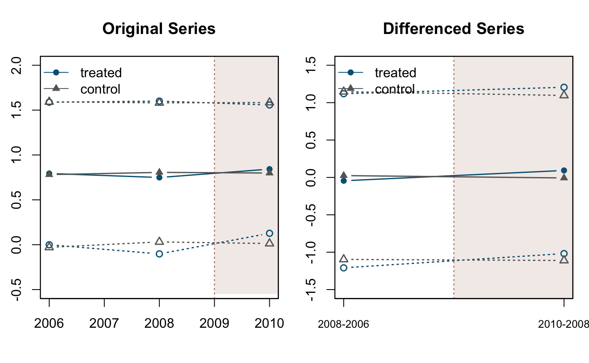
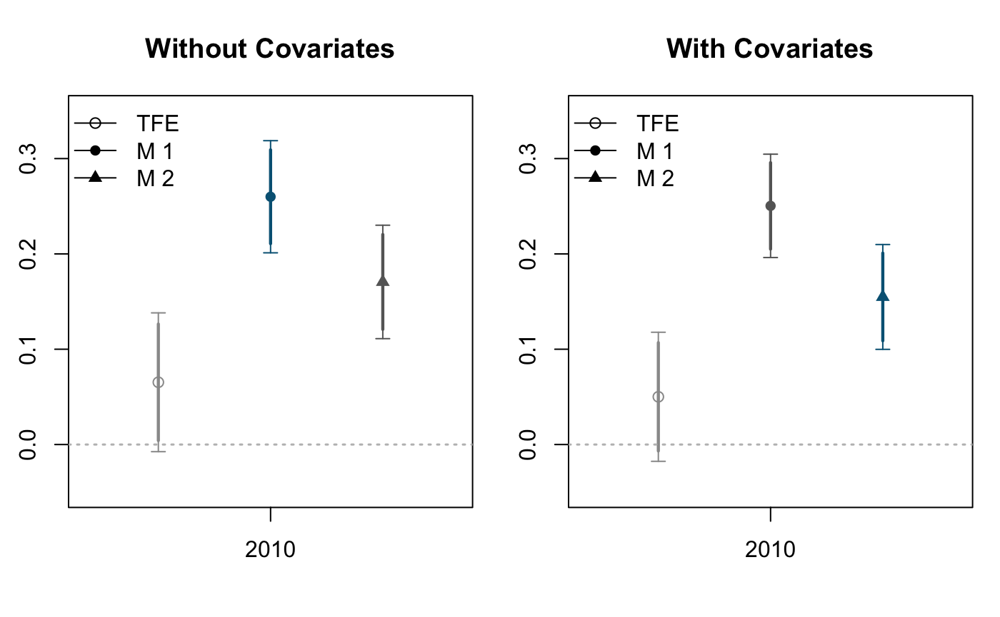
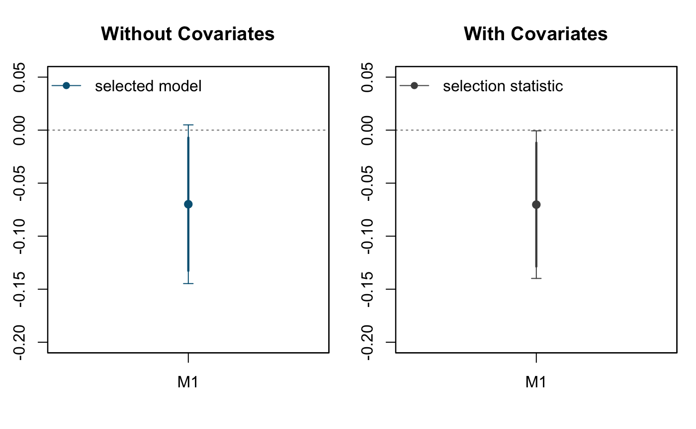

vignettes/articles/diddesign_rcs.Rmd
diddesign_rcs.RmdWe use data from Malesky et al. 2014.
# load package
require(DIDdesign)
#> Loading required package: DIDdesign
# load sample data
data("malesky2014")For the detail of this dataset, please see the documentation (or ?malesky2014).
We begin our analysis first by generating did plot with did_plot() function.
par(mfrow = c(1,2), mar = c(4, 2.5, 3.5, 1))
# original series
did_plot(goodroadv ~ treatment, data = malesky2014,
post_treatment = c(2010),
id_time = "year",
diff_order = 0,
main = 'Original Series',
ylim = c(-0.5, 2)
)
#> treat data as repeated cross-section data
# differenced series
did_plot(goodroadv ~ treatment, data = malesky2014,
post_treatment = c(2010),
id_time = "year",
diff_order = 1,
main = 'Differenced Series',
ylim = c(-1.5, 1.5)
)
#> treat data as repeated cross-section data
# parametric estimator without covariates
fit_p0 <- did(goodroadv ~ treatment, data = malesky2014,
post_treatment = c(2010),
id_time = "year",
method = 'parametric')
#> id_subject is left unspecified. treating data as repeated cross-section.
fit_p1 <- did(goodroadv ~ treatment | lnarea + lnpopden + city + as.factor(reg8),
data = malesky2014,
post_treatment = c(2010),
id_time = "year",
method = 'parametric')
#> id_subject is left unspecified. treating data as repeated cross-section.# plot function
par(mfrow = c(1,2), mar = c(4, 2.5, 3.5, 1))
plot(fit_p0, full = TRUE, ylim = c(-0.05, 0.35), main = "Without Covariates")
abline(h = 0, col = 'gray', lwd = 1.5, lty = 3)
plot(fit_p1, full = TRUE, ylim = c(-0.05, 0.35), main = 'With Covariates')
abline(h = 0, col = 'gray', lwd = 1.5, lty = 3)
# view summary
summary(fit_p0, full = TRUE)
#>
#> Method: parametric
#>
#> Call: goodroadv ~ treatment
#>
#> Main:
#> ATT 95% Conf. Int. Selected
#> 2010 0.26 [0.201, 0.319] M1
#>
#>
#> Results:
#>
#> T = 2010
#> ATT 95% Conf. Int.
#> DiD 0.065 [-0.007, 0.138]
#> M1 0.26 [0.201, 0.319] *
#> M2 0.171 [0.111, 0.230]
#>
#>
#> Selection: M1 is selected
#>
#> Theta Std. Error
#> M1 -0.0699 0.0382
summary(fit_p1, full = TRUE)
#>
#> Method: parametric
#>
#> Call: goodroadv ~ treatment | lnarea + lnpopden + city + as.factor(reg8)
#>
#> Main:
#> ATT 95% Conf. Int. Selected
#> 2010 0.25 [0.100, 0.210] M2
#>
#>
#> Results:
#>
#> T = 2010
#> ATT 95% Conf. Int.
#> DiD 0.05 [-0.018, 0.118]
#> M1 0.25 [0.196, 0.305]
#> M2 0.155 [0.100, 0.210] *
#>
#>
#> Selection: M2 is selected
#>
#> Theta Std. Error
#> M1 -0.0702 0.0355par(mfrow = c(1,2), mar = c(4, 2.5, 3.5, 1))
did_plot_selection(fit_p0, equivalence = FALSE,
ylim = c(-0.2, 0.05), main = "Without Covariates")
did_plot_selection(fit_p1, equivalence = FALSE,
ylim = c(-0.2, 0.05), main = "With Covariates")